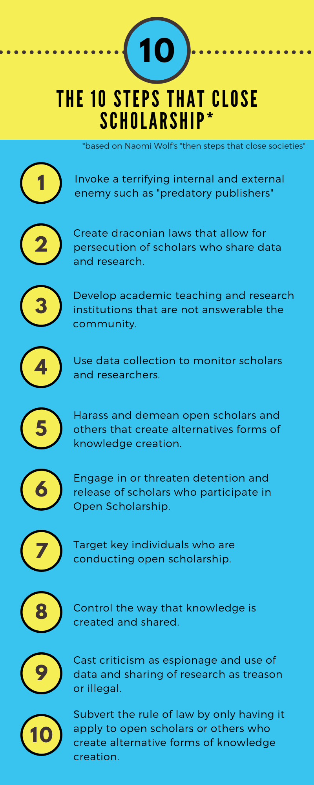

The 10 Steps
Wolf outlines ten steps that "closing societies" — such as Hitler's Germany, Mussolini's Italy, and Stalin's Russia — have historically followed. These steps, Wolf claims, are being observed in America now.
The steps are:
- Invoke a terrifying internal and external enemy.
- Create secret prisons where torture takes place.
- Develop a thug caste or paramilitary force not answerable to citizens.
- Set up an internal surveillance system.
- Harass citizens' groups.
- Engage in arbitrary detention and release.
- Target key individuals.
- Control the press.
- Cast criticism as espionage and dissent as treason.
- Subvert the rule of law.[3]
